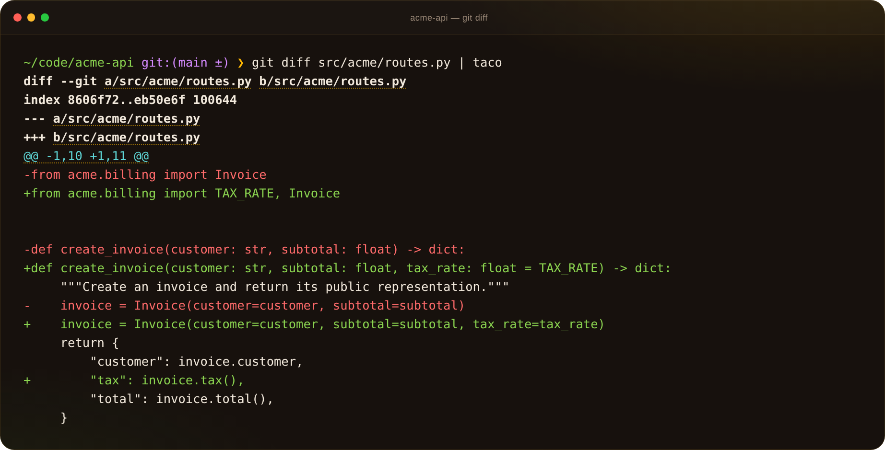
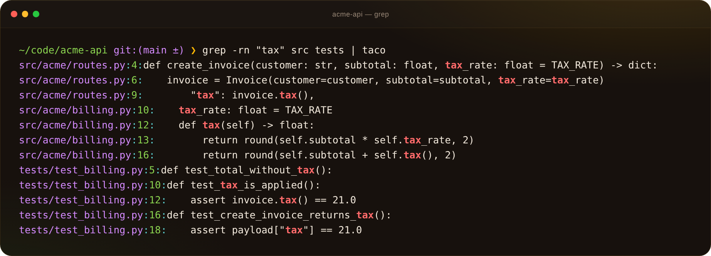
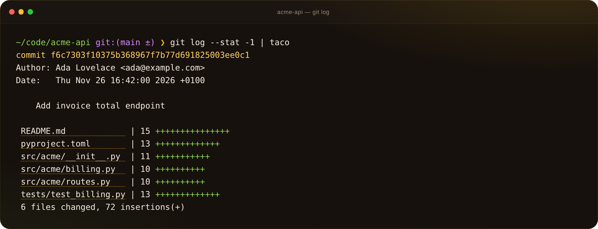
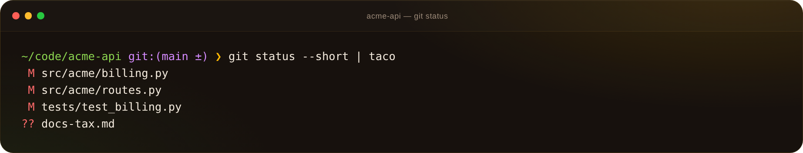

Every common line shape
Diff headers, ---/+++, hunks, binary lines, renames, git status, git log --stat, grep results, and bare paths.
OSC 8 hyperlinks for the terminal
Pipe git, diff, or grep output through taco and every path becomes a link that opens in your editor — at the right line when the input carries one.

git diff src/acme/routes.py | taco
OSC 8 links are underlined in the captures so you can see them.
Why taco
No plugins, no daemon, no dependencies. Just a stdin filter that understands the paths your tools already print.
Diff headers, ---/+++, hunks, binary lines, renames, git status, git log --stat, grep results, and bare paths.
Grep matches and hunk headers jump to the first changed line, not just the top of the file. Your editor lands where the action is.
Relative paths resolve against the Git root. Anything that escapes the repository is left untouched instead of becoming a misleading link.
Atom, VS Code, Emacs, Nano, PhpStorm, PyCharm, PyCharm Community, Sublime Text, Vim, WebStorm, and Windsurf. Pick one once; it persists.
Colours and hyperlinks survive less -R. Redirected output is written directly, so git diff | taco > patch.diff still works.
Running taco | taco is a no-op. Malformed configs, missing pagers, and broken pipes are reported or ignored — never fatal.
In the wild
These captures come from a small billing service. The dotted underlines are OSC 8 links; without them, the output looks exactly like your terminal.
grep -n path:line:text and git grep -n output become one line-aware link per result.

Every row in git log --stat is linked, from README.md to the test suite.

git status --short paths become links without stealing the two status columns.

Get started
taco.py is a single standard-library script. install puts it on your PATH; config points Git at it. Nothing to install with pip and nothing to keep in sync.
less is the default; any command works.$ ./entrypoint.sh install
$ ./entrypoint.sh config
install copies taco.py to /usr/bin/taco, using sudo when needed, and leaves your Git config untouched. config then sets the global Git pager to taco, so git output is filtered automatically.
Removes core.pager from your global Git config. The taco command stays installed.
$ ./entrypoint.sh unconfig
Daily use
Use taco wherever you would use cat. When stdout is a terminal it pages; when it is redirected it stays out of the way.
# review a change
git diff | taco
# browse a history
git log -p | taco
# inspect the working tree
git status | taco
# search a codebase
grep -rn "TODO" . | tacoPreset flags persist to ~/.config/TangoMan75/taco/config.json and are reused on every run.
Override the URL for a single run. {path} and {file} are interchangeable; {line} is optional.
grep -rn foo . | taco --template 'vscode://file/{path}:{line}'